Randy Dang
CS 120: Web Programming and Engineering
March 12, 2024
Northwind Database:
SQL Statement:
SELECT CustomerName, ContactName, City
FROM Customers;
Results:
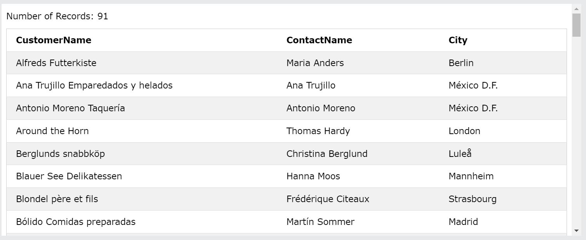SQL Statement:
SELECT *
FROM Suppliers
WHERE Country = "Germany";
Results:
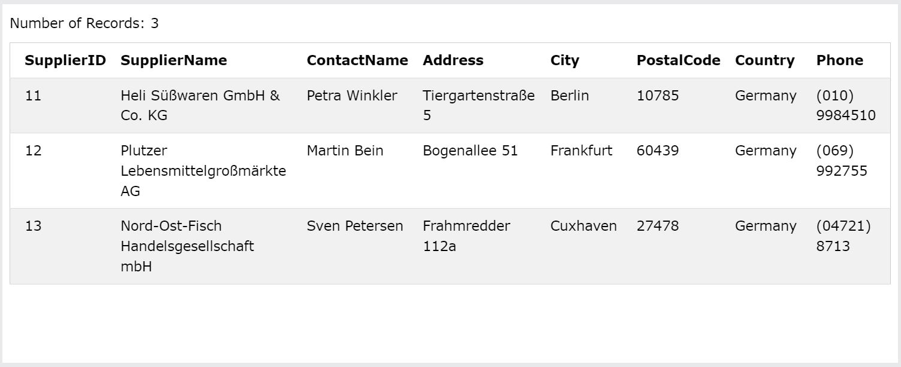SQL Statement:
SELECT ProductName, Price
FROM Products
WHERE Price BETWEEN 10 AND 20
ORDER BY Price;
Results:
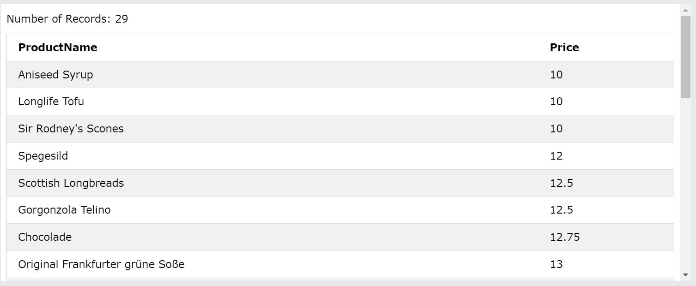SQL Statement:
SELECT ProductName, Price
FROM Products
WHERE SupplierID BETWEEN 9 AND 15
ORDER BY SupplierID, ProductName;
Results:
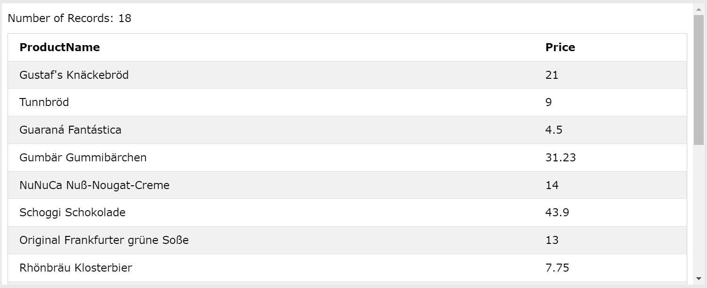I am assuming that the degree name has to be a word with an exact match in the "Notes", i.e. I am not counting BSC and MBA.
I am also assuming that the degree name will not show up as the first or last word of a sentence, as that isn't the case in any of the records and wouldn't typically be the case if the notes were written with typical sentence structures.
SQL Statement:
SELECT LastName, FirstName
FROM Employees
WHERE Notes LIKE "% B[AS] %"
ORDER BY LastName;
Results:
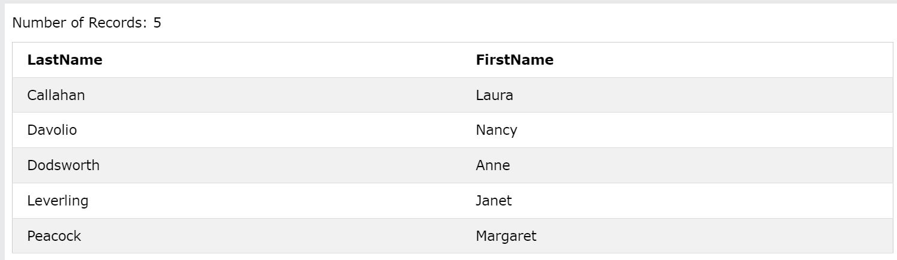ERD Diagram Representing Song List:
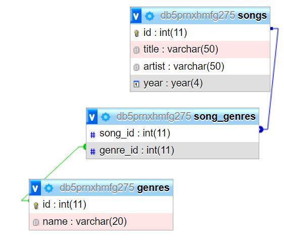Data About Tables
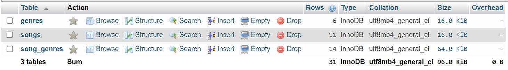Populated Tables
Songs
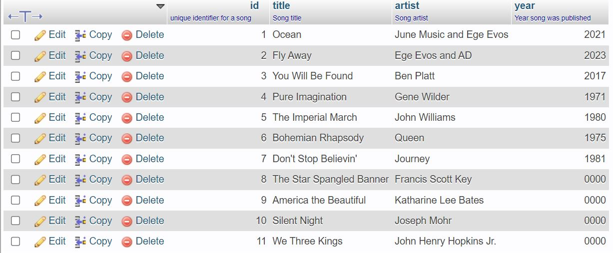Genres
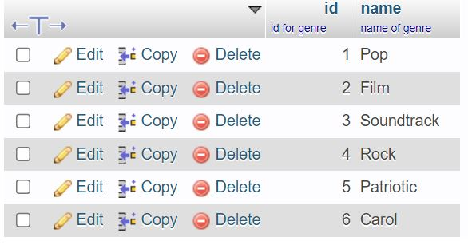Association Table between Songs and Genres
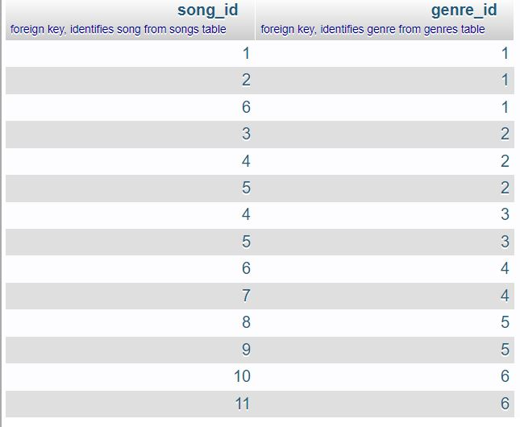Query All Data in Each Table
I am assuming that the instruction to "create and run a query to show all data in each of your tables" refers to calling a separate query per table, each of which shows all data within that given table.
Songs:
Query:
SELECT * FROM `songs`;
Result:
Genres:
Query:
SELECT * FROM `genres`;
Result:
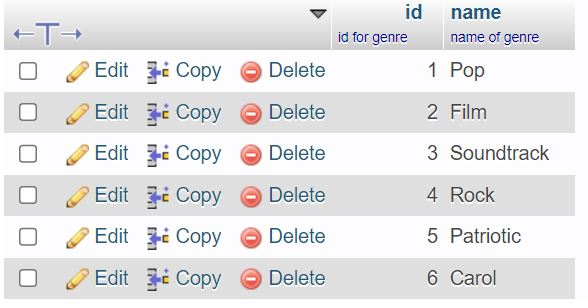Association Table Between Songs and Genres:
Query:
SELECT * FROM `song_genres`;
Result:
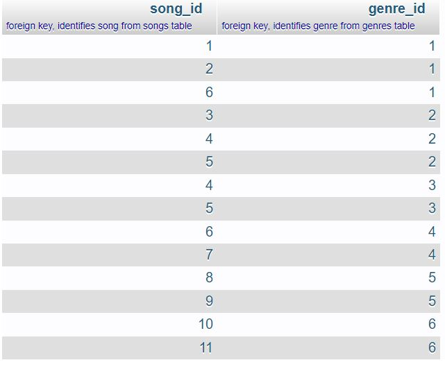Specific Queries Specified in Number 4
show all song titles and the artist
Query:
SELECT `title`, `artist` FROM `songs`;
Results:
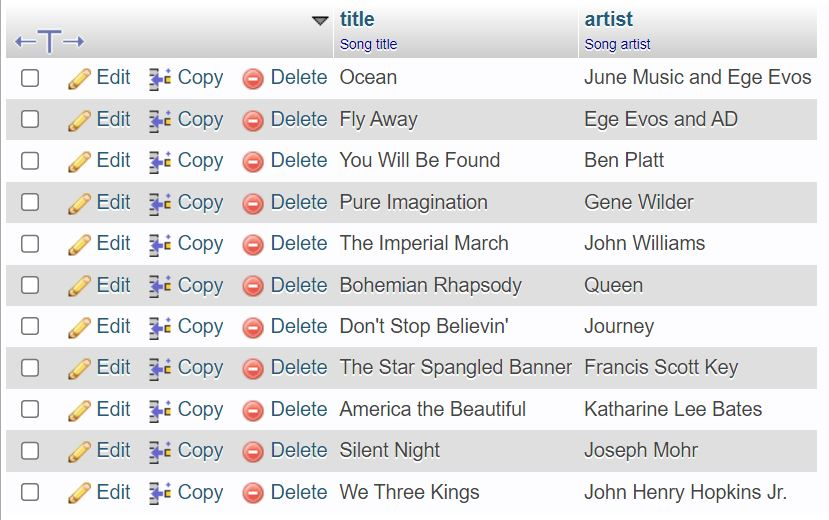show all titles and all genres that correspond to them
Query:
SELECT songs.title, genres.name
FROM songs INNER JOIN song_genres
ON songs.id = song_genres.song_id
INNER JOIN genres
ON song_genres.genre_id = genres.id;
Results:
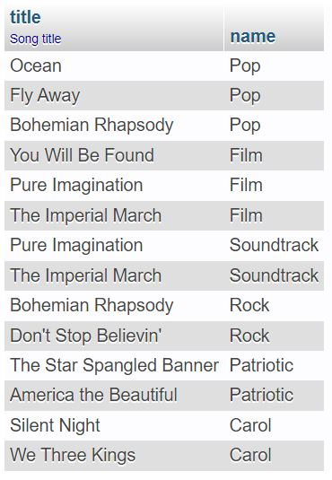